brew · design · create

brew · design · create
Graphic Designer · UI/UX Designer
Moreover, a creative kid.


Youth Workshop · 150+ Attendees
A complete visual identity system inspired by ancient journeys and the theme of "return."

Catalogue Design & Marketing Collateral
Professional catalogue layout for an established door manufacturer — maintaining brand consistency while improving product presentation.

Assistive Companion for Neurodivergent Individuals
AI-powered ecosystem with mobile app, wearable, and caregiver dashboard to support routines, emotions, and independence.

50+ Posters · 9 Months of Creative Work
Designed promotional materials for events, celebrations, weekly menus, sports screenings, and seasonal programs.
Youth Workshop · 150+ Participants
A distinctive visual identity that communicates renewal and makes the experience memorable.

Church events often rely on generic promotional materials that fail to establish a recognizable identity. The challenge was to create branding that felt meaningful, memorable, and closely connected to the workshop's theme of renewal and return.
The name Teshuvah comes from a Hebrew word meaning "return." To visually represent this, I drew inspiration from the biblical journey of the Israelites from Egypt to Canaan — a journey that became the foundation for the visual identity.
Colors inspired by desert landscapes, ancient maps, and historical manuscripts.
The Journey Begins
Event Schedule & Details
Balanced readability with historical, storytelling-oriented tone.
Promotional posters introducing the event and establishing visual identity.
Custom invitation based on illustrated map from Egypt to Canaan. The event schedule was integrated directly into the journey route.
Additional visual materials maintaining consistency with the identity system.
How the invitation became part of the storytelling experience

Started with an authentic geographic map of the Exodus route from Egypt to Canaan.

Removed unwanted info, cities, and visual clutter — keeping only the essential journey path.

Integrated the workshop schedule directly into the journey route — each stop became an event milestone.

Applied warm earth tones, brown overlay, and vintage texture for that ancient manuscript feel.
Front: Journey Map · Back: Event Details & Schedule

The illustrated map from Egypt to Canaan with event schedule integrated into the journey route.

Workshop schedule, venue details, registration info, and a personal message aligned with the theme.
The final invitation became more than just an event card — it was a visual journey that participants could follow, making the workshop experience memorable before it even began.
The final branding created a cohesive visual experience that connected every touchpoint of the event under a single narrative theme — transforming a simple event announcement into a memorable visual identity.
Catalogue Design & Marketing Collateral
Professional catalogue design for an established door manufacturer — balancing brand consistency with clear product presentation.

To create professional catalogue layouts that showcase product collections in an organized, visually appealing format while adhering to Enstyle's existing brand guidelines.
Since Enstyle already had an established visual identity, the focus was on maintaining consistency across all marketing materials.
Structured information so dealers and customers could easily find what they need.
Maintained brand fonts with clear distinction between headings, subheadings, and body text.
Modular grid system for flexible product placement across 50+ pages.
Image retouching and consistent lighting across all product photography.

Inconsistent spacing, mixed typography, poor visual hierarchy.

Clean grid, consistent branding, professional product showcase.

Product showcase spread

Collection overview spread
Assistive Companion for Neurodivergent Individuals
AI-powered ecosystem designed to help neurodivergent individuals manage routines, regulate emotions, and maintain independence.
Most productivity apps are designed for neurotypical users. Many neurodivergent individuals struggle with routines, breaking down tasks, maintaining motivation, sensory overwhelm, and staying focused without supervision.
Existing solutions often address only one area and lack personalization.
Field Research: Interviews with staff experienced in supporting neurodivergent individuals revealed:
Literature Review: Autism support systems, motivational interventions, AI task management, wearable monitoring.
Neurodivergence includes Autism, ADHD, Sensory Processing Disorders, and anxiety-related conditions — each with different needs. Instead of separate apps, we designed a flexible, personalized system that adapts to individual users.
Visual hierarchy, timers, progress indicators, simple navigation to reduce cognitive overload.
Breaks large tasks into small steps. E.g., "Clean your room" → pick up clothes, arrange books, make bed, organize desk.
Points, rewards, progress tracking, achievements — motivation without pressure.
Fall detection, emergency alerts, location sharing, caregiver notifications.
Assign tasks, monitor completion, view reports, receive alerts — collaborative support.

Onboarding & Personalization

Dashboard & Routine View

AI Task Breakdown

Caregiver Dashboard
NeuroPal evolved from a task-management concept into a complete assistive ecosystem combining routine management, AI guidance, wearable monitoring, and caregiver collaboration — demonstrating how thoughtful UX can support independence while reducing caregiver burden.
50+ Posters & Promotional Creatives
Over 9 months of creating event posters, weekly menus, festival greetings, sports screenings, and seasonal programs — balancing distinct visual styles with a polished, professional look.
Each event targeted a different audience and atmosphere — from formal club dinners to energetic sports screenings and festive celebrations. The challenge was to create visually distinct designs while maintaining a polished, professional club identity.
Working on recurring weekly content also required balancing creativity with quick turnaround times.
A selection of event posters, menu designs, festival greetings, and sports screenings

Annual Gala Dinner · Main Event Poster
 Sports Screening
Sports Screening
 Weekly Menu
Weekly Menu
 Festival Greeting
Festival Greeting
 Cultural Event
Cultural Event
 Seasonal Program
Seasonal Program
 Club Announcement
Club Announcement
"Developed efficient design workflows that balanced creativity with rapid turnaround — resulting in improved event visibility and a recognizable visual language for the club."
Freelance UI/UX designer with experience in creating intuitive interfaces and visually structured digital products. Skilled in Figma and design systems, with a focus on usability, clarity, and responsive design. Currently building impactful design solutions across web and mobile platforms.
C, Python, JavaScript
HTML5, CSS3, Responsive Design
MySQL, SQLite
VS Code, Git, Android Studio
Figma, Adobe PS/AI/ID, Canva
AI Prompting, Wireframing, Brand Identity
NPTEL IIT Guwahati
Great Learning Academy
IBM SkillsBuild